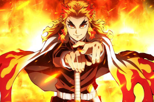

A história do Rengoku em Demon Slayer
Cosplayer fã de Kimetsu no Yaiba recria de forma perfeita os ataques de Rengoku Kyojuro era o filho mais velho de Shinjuro Rengoku. Seu pai era conhecido como o Hashira do fogo até sua aposentadoria inesperada. Kyojuro também tinha um irmão mais novo que treinou ao lado dele até que seu pai parou de ensiná-los. Kyojuro é enviado para andar no trem do infinito depois que vários Demon Slayers que foram enviados lá para investigá-lo ficaram em silêncio.
Enquanto se senta no trem, esperando e devorando sua décima primeira caixa de bento enquanto grita “gostoso”, Tanjiro, que soube que ele estaria lá e consequentemente o seguiu junto com Inosuke Hashibira, Zenitsu Agatsuma e Nezuko para perguntar a ele sobre o Hinokami Kagura, surge atrás de Kyojuro. Depois que o Hashira termina sua comida e Tanjiro explica sua pergunta, Kyojuro energicamente responde que não sabe o que é Hinokami Kagura e que esta é a primeira vez que ele ouve falar disso. Ele diz que está encantado por Tanjiro ter aplicado a dança do pai ao seu estilo de luta, então rapidamente muda de assunto e diz a Tanjiro que ele deveria se tornar seu Tsuguko. Tanjiro diz a ele para ir mais devagar e pergunta se ele pode pelo menos tentar ajudar um pouco mais a responder sua pergunta.
A história do filme acontece e eles são capazes de deter o demônio do trem, mas infelizmente o lua superior 3 aparece em frente deles, e uma batalha mortal entre ele e Rengoku se inicia. Com Rengoku dando bastante trabalho, mas acaba perdendo no final.
Kyojuro fala para Tanjiro viver de cabeça erguida e que ele não deve se preocupar com sua morte aqui, já que é natural que um Hashira dê sua vida protegendo seus subordinados. Ele olha para Tanjiro, então para Inosuke e Zenitsu, e diz que acredita neles e que pensa que eles se tornarão a próxima geração de Hashiras do Corpo de Caçado.
A personalidade do Kyojuro Rengoku
Este é o melhor cosplay do Rengoku de Demon Slayer que você verá hoje Kyojuro está muito entusiasmado com seus deveres como Hashira, e muitas vezes parecia alegremente excêntrico. Ele é amável, puro de coração e ostentava uma técnica e esgrima extraordinárias decorrentes de prática e disciplina rígidas. Ele é um guerreiro honrado que seguiu seu código de moral e princípios que foi inculcado nele por sua mãe desde jovem, o mais significativo sendo sua crença de que aqueles que nasceram fortes têm o dever de proteger os fracos.

As habilidades de Kyojuro Rengoku
Filme de Demon Slayer ultrapassa A Viagem de Chihiro e se torna a maior bilheteria do Japão Como um Hashira, Rengoku é um espadachim muito poderoso. Até mesmo Demônios tão fortes quanto Akaza, Lua Superior 3 e o quarto mais forte dos Demônios conhecidos, reconheceram a força de Kyojuro. Ele até chegou a se oferecer para transformar Kyojuro em um Demônio para que ele pudesse ultrapassar seus limites humanos e se tornar mais forte, algo que ele só ofereceu a espadachins cujas habilidades ele acreditava serem refinadas ao máximo.
Akaza também elogiou seu espírito de batalha e afirmou que está se aproximando do “domínio da supremacia”, o que significa que ele estava incrivelmente perto de obter o Mundo Transparente, se apenas ele poderia despertar sua Marca do Caçador de Demônios. Seu pai, Shinjuro Rengoku, afirmou que, depois que seu filho abandonou o que lhe ensinou, Kyojuro Rengoku se treinou para o nível de Hashira após ler um livro de instruções do estilo de respiração das chamas, um livro que tinha apenas 3 volumes.
Como todos os Caçadores de Demônios habilidosos, Kyojuro tem sentidos incrivelmente apurados, como quando ele foi capaz de sentir e perceber a imensa presença de Akaza e a aura demoníaca que ele usa para discernir que ele era um Nível Superior. Kyojuro também foi capaz de sentir presenças demoníacas com mais rapidez e precisão do que Tanjiro Kamado, que possui um olfato agudo, quando detectou dois demônios um após o outro em um trem antes que alguém notasse. Essa habilidade também permite que ele avalie com precisão as habilidades regenerativas e as fraquezas da maioria dos Demônios, como Enmu.